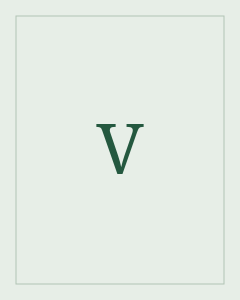

Voltaire
Vauhdikas kertomus koettelee varmoja selityksiä.
Voltaire oli ranskalainen kirjailija ja valistusajattelija. Hän käytti kertomusta ja satiiria tutkiakseen valtaa, suvaitsevaisuutta ja ihmisten tapaa perustella maailmaa.
Etsi teokset kirjastostaElämä ja teokset
Voltaire oli François-Marie Arouet’n kirjailijanimi. Candide eli optimismi ilmestyi vuonna 1759. Sen tapahtumat asettavat optimistisen maailmanselityksen vastakkain sodan, väkivallan ja onnettomuuksien kanssa.
Tyyli ja teemat
Lyhyt, nopea kohtaus voi sisältää suuren väitteen. Ironia syntyy usein siitä, että henkilöiden varmat selitykset jatkuvat, vaikka tapahtumat puhuvat niitä vastaan. Huumori jättää lukijalle vaikean kysymyksen siitä, mikä olisi parempi tapa toimia.
Satiiri · Valta · Suvaitsevaisuus
Aloita tästä
Candide eli optimismi
Candide lähtee maailmalle ja joutuu arvioimaan oppimaansa optimismia yhä uusien kokemusten valossa.
Seuraa, milloin henkilöt yrittävät selittää kärsimystä ja milloin he ryhtyvät muuttamaan omaa toimintaansa.